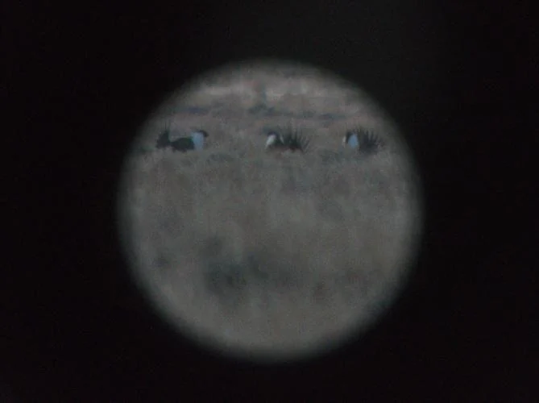
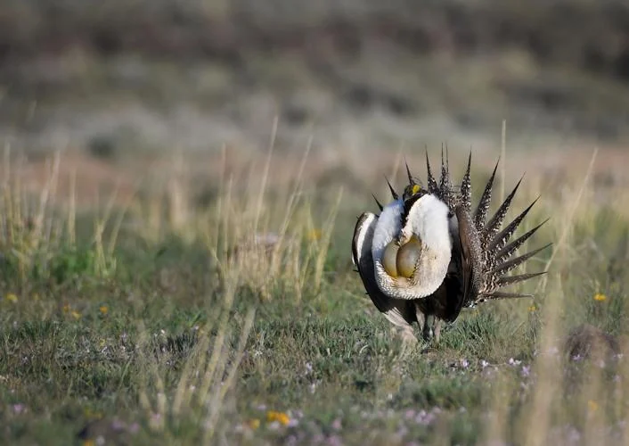
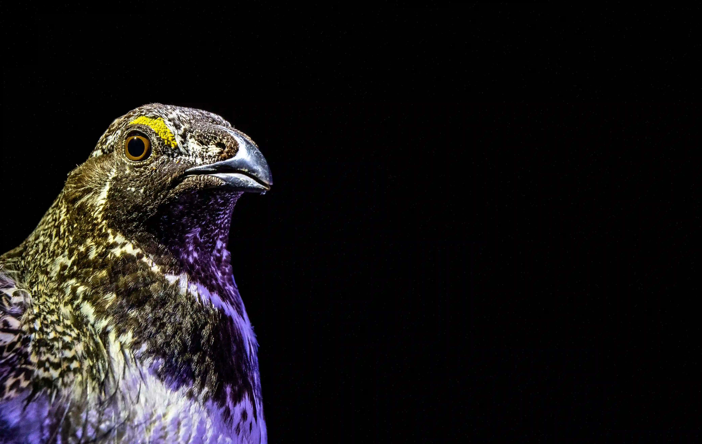

Sage grouse
-

Converse County sage grouse numbers fall as oil and gas drilling increases
-

Closer and closer to the last dance: Sage grouse continue to struggle as feds try to roll back protections
-

Grazing and grouse: 10-year study looks at impact of livestock on imperiled bird